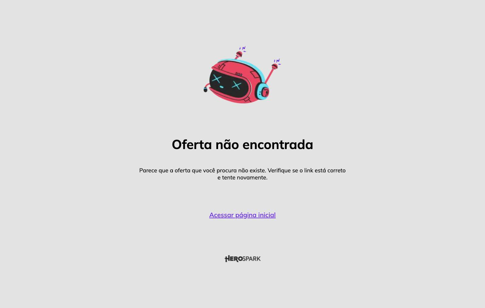

Dra. Fernanda Fiori · análise da página de vendas
Analisei linha a linha a página de vendas da Imersão Prática — copy, oferta, prova, rastreamento e carregamento — e cruzei com o que o último ciclo de mídia realmente entregou. O achado mais caro não é de texto: os seis botões de compra apontam para um checkout que devolve “Oferta não encontrada”.
Enquanto o link de compra estiver morto, toda verba que voltar a rodar é perda de 100% — a pessoa clica no anúncio, lê a página inteira, clica em comprar e bate numa página de erro. Isso vale para as cinco versões da página que estão no ar.

Números do ciclo 04 (29/08 a 19/09), cruzando o que o Meta entregou com as vendas reais registradas na HeroSpark.
| Etapa | Pessoas | Passa | Leitura |
|---|---|---|---|
| Clicaram no anúncio | 1.111 | — | R$ 4.592,75 de mídia |
| A página abriu | 971 | 87,4% | 140 cliques pagos (≈ R$ 578) somem antes da página carregar |
| Clicaram em comprar | 142 | 14,6% | abaixo do 17,7% da 1ª edição e da meta de 15% |
| Compraram | 26 | 18,3% | etapa do checkout, não da página |
O que pagou o ciclo não foi o ingresso. Das 30 vendas pagas, 28 foram ingresso de R$ 97 — R$ 2.722,84 contra R$ 4.592,75 de mídia, ou seja, o evento sozinho devolve 0,59x. O ciclo só fecha em 1,20x por causa de uma única venda do Método Midas, de R$ 2.497, que sozinha é 45% de toda a receita. A página de R$ 97 não existe para se pagar: ela existe para encher a sala onde o Midas é apresentado. Por isso a métrica que importa nela é volume de inscrito, e conversão da página é a alavanca mais direta que temos.
A trava é a página, não o anúncio. O anúncio entregou CTR de 1,57% e trouxe 971 médicos até o texto de venda — tráfego bom, custo de visita dentro do esperado. De cada 100 que chegaram, 85 leram e foram embora sem tocar no botão.
Com o mesmo tráfego e o mesmo dinheiro, cada ponto percentual de conversão da página vale 9,7 checkouts, 2 vendas e R$ 199 de ingresso por ciclo — sem contar o que essas duas pessoas a mais valem na hora do Método Midas. Sair dos 14,6% atuais para 20% — patamar normal para uma página de evento barato com oferta clara — significa:
É o mesmo anúncio, o mesmo público e a mesma verba. Muda só o que acontece depois do clique — e é a parte mais barata de consertar, porque não custa mídia nenhuma. Como o resultado do ciclo depende da venda do Método Midas no fim do evento, cada inscrito a mais na sala vale bem mais do que os R$ 97 dele.
Os seis botões das cinco páginas apontam para pay.herospark.com/…ingresso-comum-526980, que hoje devolve 404 e a mensagem “Oferta não encontrada”. A oferta foi encerrada na HeroSpark junto com o evento de 19/09 e ninguém atualizou o link.
Medi no navegador: clicar no botão de compra não dispara nenhum evento de pixel. O único evento que a página manda é PageView. Os 142 “checkouts iniciados” e as 26 compras que aparecem no painel vêm da própria HeroSpark, num domínio que não é o da página — por isso o público de site da conta tem 20 pessoas e nunca serviu para remarketing.
Na prática: você não consegue perseguir quem leu a página inteira e clicou em comprar sem finalizar, que é o público mais quente que existe nesse funil.
GTM-NN4R45G2) disparando um evento próprio no clique do botão — clique_comprar, não “InitiateCheckout”, para não duplicar com o que a HeroSpark já manda. Mais um ViewContent em 50% de rolagem. São 15 minutos e abrem dois públicos novos de remarketing.“19 de setembro”, “sábado”, “★ 4ª Edição” — quatro ocorrências da data vencida na v4 e na v1, sem o ano em lugar nenhum. Quem cair na página hoje vê um evento de dez dias atrás.
Todas as cinco versões terminam com “© 2026 — Imersão Prática: Dominando Lipo Definição”. O template veio de outro lançamento e o rodapé nunca foi trocado. Para um público de médicos que está avaliando se confia na condução clínica de quem ensina, esse tipo de descuido no rodapé pesa mais do que parece.
De /imersao-pratica/ a /imersao-pratica-v5/, todas respondem 200, todas com o mesmo conteúdo, o mesmo checkout morto, nenhuma com noindex e nenhuma com canonical. O Google escolhe sozinho qual mostrar, e o “v4” aparece no título da aba do navegador e em qualquer link compartilhado.
noindex + redirecionamento. Assim também não existe mais o risco de atualizar a página errada.A página não tem nenhuma tag og: — sem título, sem imagem, sem descrição de compartilhamento. Colada num grupo de médicos, sai como um link cru. Num produto que tem grupo de WhatsApp como entrega e indicação entre colegas como canal, isso é alcance jogado fora.
Certificado: uma seção diz “após 7 dias você recebe”; o FAQ diz “após o evento”.
Garantia: um bloco promete “sem burocracia e sem questionamentos”; o FAQ condiciona “dentro do prazo informado” — e o prazo não é informado em lugar nenhum da página.
Horário: o topo diz 09h às 18h; os blocos dizem manhã 09–13 e tarde 15–18; o cronograma diz almoço às 12h e retorno às 15h. Três versões do mesmo dia.
Ingresso: o FAQ manda “escolher a modalidade — Ingresso Comum ou Ingresso VIP”, e VIP não existe nesta oferta.
A única prova da página são oito prints sob o título “Feedback de alguns pacientes”, e eles aparecem só na metade da rolagem. Para um médico decidindo se compra um curso, depoimento de paciente é a prova errada — ele não está comprando resultado estético, está comprando segurança clínica e método.
E as credenciais mais fortes que existem na página estão escondidas: dermatologista, CRM-GO 12319, RQE 8199 aparecem só na assinatura da garantia. O RQE é exatamente o que separa a Dra. Fernanda da maioria de quem ensina toxina no Instagram.
São sete cards e todos começam com “Parece que…”, “Soa como se…”, “A impressão que fica é que…”, repetindo os três em ciclo. É a parte da página que deveria fazer o médico se reconhecer, e ela fala como se tivesse medo de afirmar.
“93% das vagas preenchidas” aparece três vezes, sempre no mesmo número, num evento 100% online — onde vaga não acaba. “Lote atual com vagas limitadas” e “esta oferta expira em breve” sem data nenhuma. Médico é público cético; escassez falsa queima confiança justamente onde ela mais importa, que é ao lado do botão.
O aviso “⚠️ Importante: as gravações NÃO estão incluídas nesta modalidade” aparece duas vezes, destacado, logo abaixo do botão de compra. A informação é honesta e precisa ficar — mas colada no CTA, em destaque, ela só dá um motivo a mais para adiar.
A página pesa 2,97 MB em 77 requisições (2,5 MB só de imagem) e leva 3,6s para terminar de carregar em desktop com fibra. No 4G de um celular entre um paciente e outro, é bem mais. Já se perdem 140 dos 1.111 cliques pagos (≈ R$ 578 no ciclo) antes da página abrir.
São 21.780 pixels de rolagem — o equivalente a umas 25 telas de celular — com seis botões espalhados e nenhum CTA fixo.
O script que carrega os parâmetros do anúncio para dentro do checkout está impecável: guarda a origem por 7 dias, reescreve todos os links da HeroSpark e ainda manda os identificadores próprios (src e sck). Testei com um UTM falso e os sete parâmetros chegaram inteiros no destino. É por isso que dá para saber qual criativo vendeu — e é o que faz o painel de vendas funcionar. Não encostar.
Os quatro primeiros são de execução, não de decisão: resolvem em uma tarde e são pré-requisito para religar a conta. Do cinco ao oito é trabalho de página e pode entrar junto com a montagem do próximo ciclo.
GTM-NN4R45G2 lido tag por tag, mais um clique instrumentado no botão de compra para ver o que o pixel realmente manda (não manda nada).